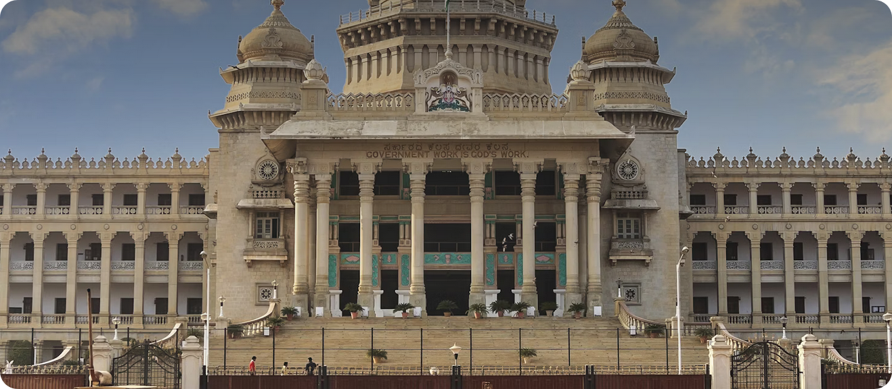
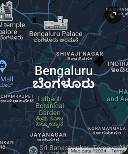
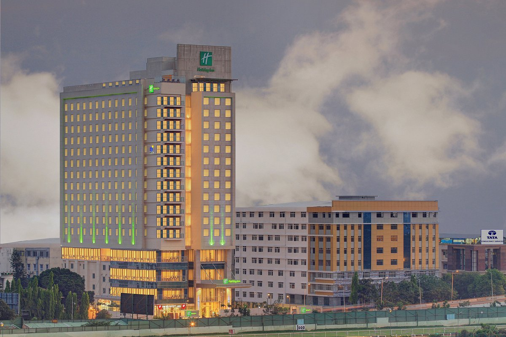
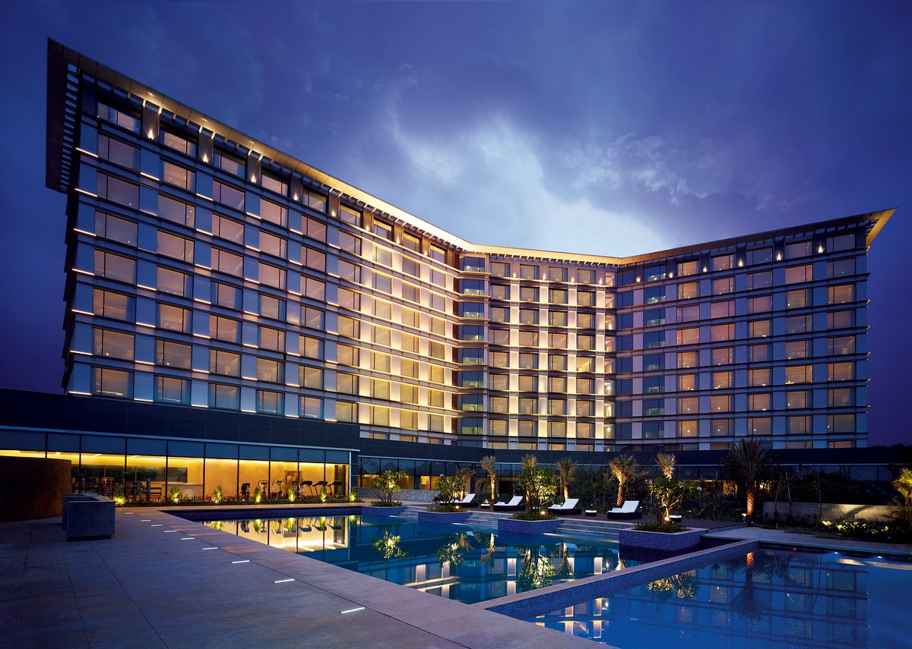
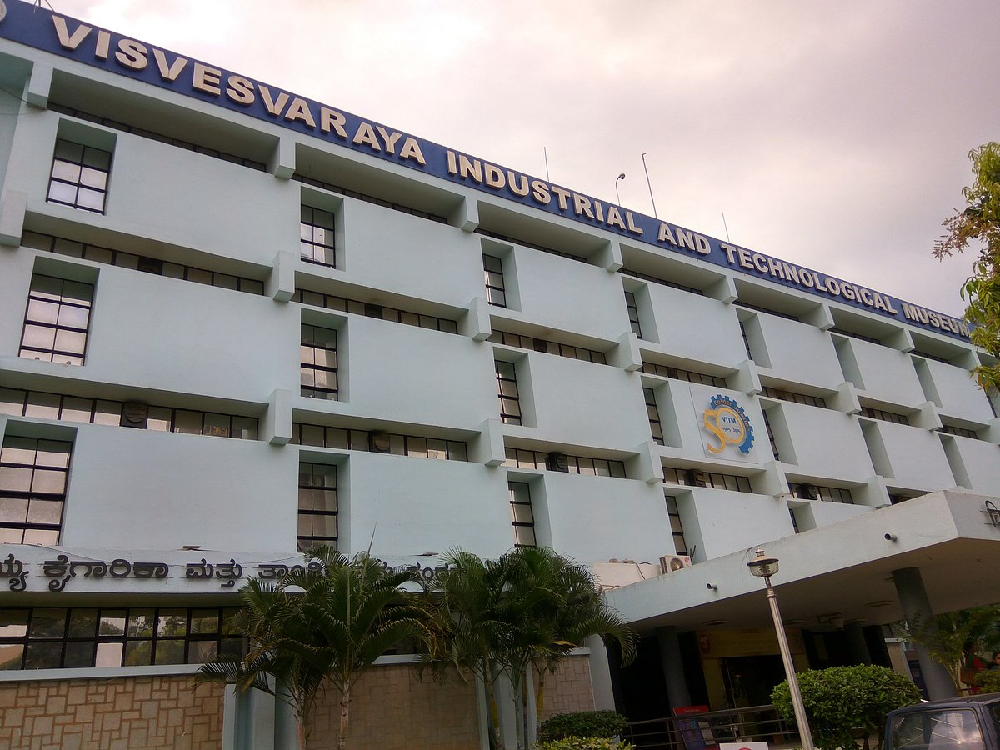
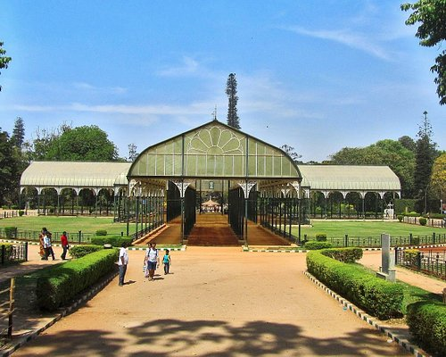
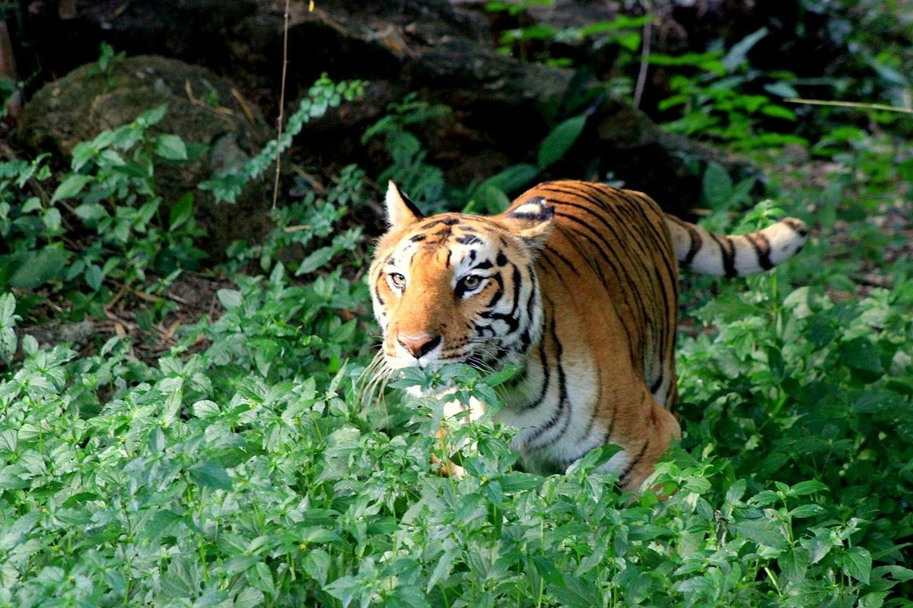

Bengaluru (also called Bangalore) is the capital of India's southern Karnataka state. The center of India's high-tech industry, the city is also known for its parks and nightlife. By Cubbon Park, Vidhana Soudha is a Neo-Dravidian legislative building. Former royal residences include 19th-century Bangalore Palace, modeled after England’s Windsor Castle, and Tipu Sultan’s Summer Palace, an 18th-century teak structure.

Leela Palace Bengaluru
The Leela Palace Bengaluru has been "ranked 10 among the top ten city hotel’s in Asia by Travel & Leisure Reader’s choice award 2019." The hotel is nestled amidst seven acres of lush gardens and a sparkling lagoon, built in an art-deco form drawing inspiration from the architectural style of the Royal Palace of Mysore. Its copper domes, arches and ornate ceilings reflect the grandeur of palaces of a bygone era. From the hand-woven carpets to the priceless brass antiques, from the hand-picked crystal to the finest bone china, everything is the best the world has to offer. Situated on Old Airport Road, it is in close proximity to the Embassy Golf Links and convenient to Whitefield & Electronic City business districts and an easy stroll from the KGA golf course. The Leela Palace Bengaluru has all the attributes of comfort, technology and design associated with one of the leading hotels of the world.

Bengaluru Racecourse,an IHG Hotel
Conveniently located along Seshadri Road across Bangalore Turf Club, Holiday Inn Bengaluru Racecourse is about 34 km from Kempegowda International Airport. We are only one kilometre away from Kempegowda Bus Station and Bengaluru City Junction Railway Station. We are also close to attractions like Cubbon Park, UB City, Chinnaswamy cricket stadium, and corporate buildings like Canara Bank, RBI, NABARD, and State Bank of India Offices. The 272 well-appointed rooms include 22 premium rooms with a private balcony and 22 suites with an individual living room and facilities like a microwave and dining area to attract long-stay guests. Travel easily to other parts of the city with readily available taxis in the area. Enjoy free WIFI throughout the hotel. Kick-start your day with a power breakfast and enjoy our high-quality bedding and power shower experience to recharge after a fun-filled day of activities..

Taj Yeshwantpur,Bengaluru
Convergence has a new address. Heres where sophisticated business travellers can find intelligent business environs and vibrant leisure options in one hot spot. Where spirited style meets Bangalore's largest convention spaces. At Taj Yeshwantpur, Bengaluru. Superbly located with 327 rooms near the modern metro terminus, minutes from Yeshwantpur Railway Terminus and just 35 km from the airport. Soak in the space thats only 15km from Bangalores city centre. Standing tall in 3.56 acres. Adjoining the Peenya industrial estate - near Bangalore International Exhibition Centre, famed educational institutions, modern hospitals and luxury residential complexes. Feel the pulse of an international business and conferencing destination. With 18000 sq ft of banqueting space, an independent convention centre and parking for 400 cars. Technology is woven through it.

Visvesvaraya Industrial and Technological Museum
Visvesvaraya Museum is fun for children and adults. It houses a treasure trove of machines and artifacts related to science and technology. Its interactive exhibits make this a great place for children to develop a love for science. There are exhibition Halls on Engines, Electricity, Fun Science, Space, Biotechnology & Electronics. Animated dinosaurs,life-size model of Wright Brothers' flyer and Steam locomotive are other attractions.There are interesting shows like 'Science on a sphere', 'Taramandal', '3d film show' and 'Science show' held at regular intervals. The 'Science for Kids' gallery is the new addition to the Museum.

Lalbagh Botanical Garden
Lalbagh Botanical Garden is an botanical garden in Bangalore, India, with an over 200-year history. Lalbagh is a 240 acres garden. It has a lake , lotus ponds ,rose garden, park and a glass house. From Flower show point of view , the glass house is the best part otherwise there is not much to enjoy as such. Plays and music events take place during the evening in local language. The campus is huge. Lot of walking which is a healthy activity in today's world. Management need to focus more on the landscaping and beautification of the campus . There are lots of start ups who put up shops here selling plants , flowers , gardening/landscaping services , bonsai plant etc. I found one startup selling bottled water having high alkaline value and Vitamin B12 ,Brand Name is "Fusion Mont Cool".

Bannerughatta Biological Park
Bannerghatta National Park is a national park in India, located near Bangalore, Karnataka. It was founded in 1970 and declared as a national park in 1974. In 2002, a small portion of the park became a zoological garden, the Bannerghatta Biological Park. Wikipedia Address: Bannerghatta Rd, Bengaluru,One of the main attractions in Bangalore, and nothing much impressive in all aspects.National park safari was worth mentioning and also the butterfly garden and reserves gives you a bit overwhelmed. Ticket prices are high especially for the safari, but folks please prefer the air conditioned coaches..